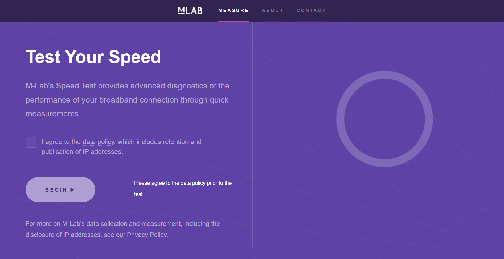

网页版测速Measurement Lab

这是一个简约漂亮的测网速的网站，具有很强的设计感，是外观大于实用的那类。
Measurement Lab
Measurement Lab (M-Lab) provides the largest collection of open Internet performance data on the planet. As a consortium of research, industry, and public-interest partners, M-Lab is dedicated to providing an ecosystem for the open, verifiable measurement of global network performance.
勾选方框后，就可以开始测试，网速测试指标也很简单，就是下载、上传延迟和丢包数据。